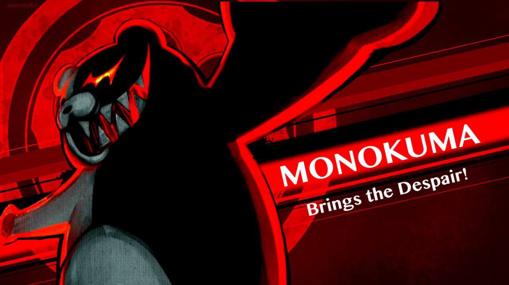

La trama hasta el momento...
Prólogo
19 maravillosos y destacables alumnos Definitivos fueron seleccionados para el curso especial en la Academia Pico de Esperanza. Estos alumnos fueron invitados a una excursión de convivencia patrocinada por la Academia Pico de Esperanza, con el objetivo de que se vayan conociendo en un ambiente en harmonia. ¡Lo cual seria la reserva natural, Harmony Hills!.
En lo que los alumnos estaban calmadamente en el autobús de ida a la excursión, todo se volvió negro.... Fueron despertando entonces todos los alumnos desperdigados en las distintas aulas de un lugar desconocido sin recuerdo alguno de como llegaron allí, nada más el conocimiento de que habían sido aceptados como estudiantes de la Academia "Pico de Esperanza". Eventualmente todos se reunieron en la puerta de Sala de Exposiciones la cual se abrió al reunirse todos los alumnos para mostrar en el interior, un ambiente extraño....
!Un cadáver ha sido encontrado!
Desde las bocinas sonó una voz avisando a los alumnos de que deberían empezar una investigación para averiguar como ocurrió el "asesinato", removiendo la comida como incentivo para que le tomaran interés. ¡Con ello comenzó la investigación! Y con la misma rapidez terminó. La voz de las bocinas guió a todos al Patio donde al presionar una placa, serían llevados a la sala del Juicio Escolar.
Utilizado como tutorial para enseñarle a todos los alumnos como funcionarían los Juicios Escolares desde ese punto en adelante, los compañeros consiguieron reorganizar el caso y explicar como sucedió el mismo. ¡Ganaron! Acabado el juicio, aquella voz que les estuvo hablando hizo presencia finalmente, y se reveló como nadie más ni menos como el director de esta institución,
¡Monokuma!
¡Presentándose para accionar una nueva edición del juego de matanza mutua!
La desesperación de los recuerdos de la tragedia llenaron las almas de los nuevos concursantes, pero también la esperanza se hizo notar... unánimes reacciones que los llevarían a subir al ascensor, dando inicio, a esta nueva página en la historia negra de la esperanza definitiva.
¡SIGAN SINTONIZANDO PARA EL PRIMER CAPÍTULO DE DANGANRONPA: FREEZING HOPE!
Capítulo 1
Shattered Bonds, Twisted Truths, A Deadly Trial
-HOPE-
El semestre de matanza mutua oficialmente daba un gran y emocionándolo comienzo! Con peleas internas entre sus compañeros, arrojar a una fuente de mugre a la piscina para que por fin deje de apestar la reserva, ¡En un entretenido episodio de Danganronpa!
Decidieron abrir con una excavación en un intento de escapar de la academia, de la cuál se le puso dudas en las reuniones que organizaron los propios estudiantes... de las cuales se les fue puestos en el camino incentivos para quitarles la vida a sus tan queridos compañeros, ¡Sus secretos más oscuros, siendo revelados a los estudiantes y próximamente al mundo! ¿Su reacción? Unos cayeron en la desesperación, otros ignoraron sus propios secretos, y los demás decidieron seguir adelante... de eso mismo, la razón por la que no fueron lanzados al mundo, fue por un trato de su compañera Nova con el mismo Monokuma! No reaccionaron muy bien, y una reunión destruida por los prejuicios~...
4 estudiantes nuevos despertaron para unirse al grandioso juego, sus nombres serían: La fanatica Definitiva Elena, El fotógrafo Alexander, La estratega definitiva Yoria y La médica Definitiva Shir, ¡Todos preparados para tomar el estrado en los juicios que vendrán! Las mismas personas tuvieron reacciones distintas ante ser puestas en un juego de mantanza mutua, pero entre mucho destrozo por el asunto de los secretos, Elena trajo conmocion con la revelación de los secretos del Estudiante Amo de Casa Definitivo, Arath. Llevando consecuencias consigo para sus relaciones a futuro.
Los laboratorios Definitivos de la Fanatica Definitiva, del Actor Definitivo, del Cosplayer Definitivo y de la Programadora Definitiva fueron abiertos, algo que mas tarde tendra efectos en como a futuro se va a desenvolver el caso.
La excavacion continuo como era previsto, avanzando bastante con la ayuda de varios compañeros del lider del trabajo, Yuuto. Del cual encontraron un Monokuma roto, cuya evidencia prueba que fue hecha en Ciudad Towa durante la tragedia... Demostraba ser bastante viejo... No trajo tanta conmocion como se esperaba, pero lo que si lo hizo... ¡Fue el show de Marionetas de Alessandro, el Actor Definitivo! Que acabo con una impactante reverencia, en la cual fue golpeado en la cabeza por una de las luces de su propio escenario... Poniendo en duda quienes podian ser de confianza en el grupo.
La noche cayo, y pensaron que iba a pasar mas tiempo hasta que la tragedia llegase a sus vidas.
-TRAGEDY-
- Durante las 6 AM, un furtivo apagón golpeo a la academia desactivando inclusive a Monokuma, cuyo responsable fue la Programadora Definitiva en un intento de escape. Algo que los estudiantes Jack, Lunele y Joe pudieron notar a pesar de las condiciones nocturnas...
- A mas tardar cerca de las 8 AM, fueron encontrados lastimosamente los cuerpos de Yuuto y Alessandro, uno en los baños sucumbiendo a sus heridas y otro en la sala de calderas incinerado, comenzando de esa manera la investigacion, longeva y complicada para aquellos que fueron nublados por el trauma que significaba ver cadáveres, peor si eran de sus compañeros.
- La investigación concluyo, y todos fueron convocados en la fuente para dar paso a la ceremonia del juicio escolar... para pasar a un momento lleno de traición, lucha y lagrimas... Que trajo como invitado especial a nada mas ni nada menos que, ¡Junko Enoshima!
O al menos eso pensaron al principio, pero mientras se fueron desenvolviendo los debates y las luchas entrecruzadas. Determinaron que esta persona era realmente Alessandro, el Actor Definitivo, quien quitandose su disfraz, revelo que el cuerpo incinerado le pertenecia a la Programadora Definitiva, Feng Wanrong. E intento en los ultimos momentos inculpar de esta muerte a la Exploradora Artica Definitiva, Alice.
La votacion comenzo, dando entonces los siguientes resultados al publico:
- Alice: 4 votos
- Alessandro: 11 votos
- Nova: 1 voto
El publico lo había decidido, Alessandro Renzo era el culpable... y tras un momento para reclamarle sus compañeros por las victimas, el castigo debia de comenzar.
Lo unico que quedo de Alessandro tras su ejecucion, fue un esqueleto flotando en el vacio, agujereado y maltratado. Lo cual fue una vista horrible para los estudiantes, a pesar de haber sido este el asesino. Todos tras concluir con el juicio volvieron al exterior, a continuar sus vidas, y pensar que esto era solamente una pesadilla...